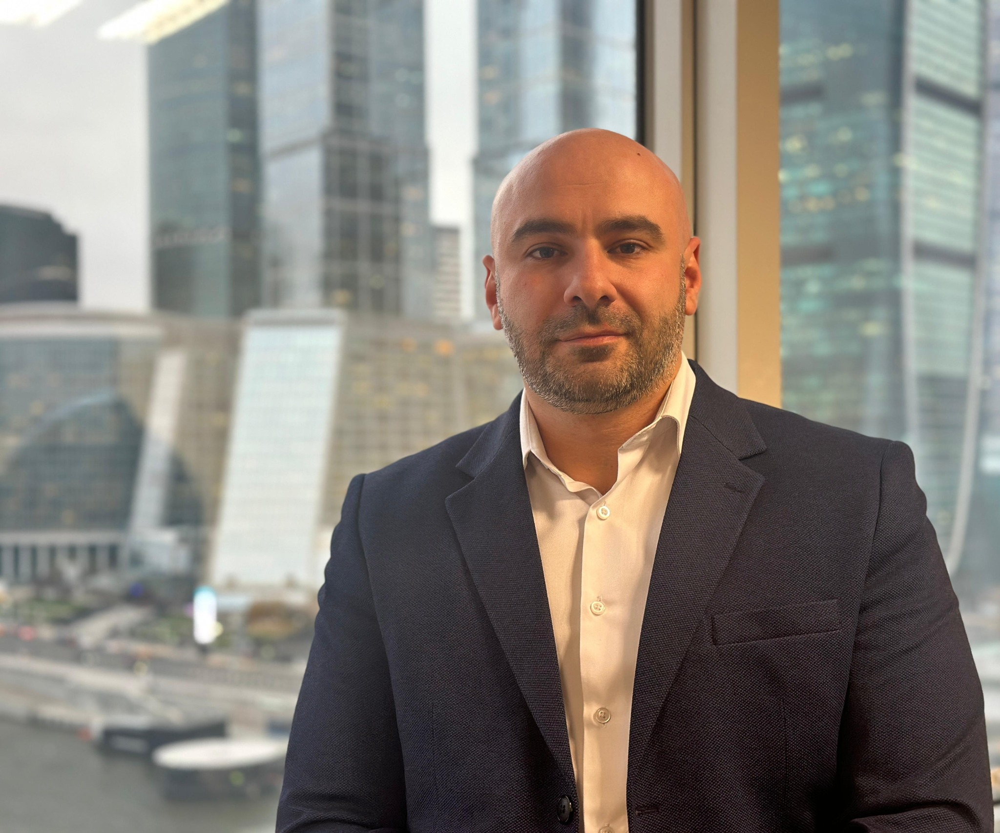

TNS Back Office
Регулярные юридические, договорные и HR-задачи в формате понятной ежемесячной подписки.
- Договоры, протоколы, претензии, деловые письма
- Кадровые документы и HR-поддержка
- Контроль договоров, сроков и текущих задач
TNS GROUP · BUSINESS OPERATIONS
Помогаем собственникам и руководителям в договорных, финансово-управленческих и производственных вопросах. Основатель лично ведёт ключевые этапы и подключает профильных специалистов под задачу.
ЧТО МЫ БЕРЁМ НА СЕБЯ
Выбираем формат под задачу, определяем состав работ и заранее согласуем результат первого этапа.
Регулярные юридические, договорные и HR-задачи в формате понятной ежемесячной подписки.
Диагностика, экономика, процессы, KPI и трансформация — когда компании нужен управленческий результат, а не презентация.
Производство, строительство и CAPEX-проекты — аудит, запуск, повышение эффективности и проектное управление.

ЛИЧНАЯ ОТВЕТСТВЕННОСТЬ
Основатель и руководитель TNS Group
Более 15 лет профессионального опытаРуководящие роли в российских и международных компаниях. Практика на стыке строительства, промышленности, коммерции и управления.
Юридическое образование — Международный юридический институт. Управленческое образование — РАНХиГС при Президенте РФ.
Лично определяю подход и веду ключевые этапы. Для отдельных задач подключаю профильных специалистов и отвечаю за координацию работы.
Посмотреть опыт в проектах →ОПЫТ ОСНОВАТЕЛЯ
Manaseer Industrial Complex
Создание производства минеральных продуктов, операционной модели и коммерческого направления.
Зураб Долидзе отвечал за программу запуска, формирование команды и развитие рынков.
Опыт работы в NETZSCH-Feinmahltechnik GmbH
Руководство производственной площадкой и лабораторией сочеталось с участием в проработке, договорной работе и запуске или модернизации линий заказчиков.
Работа на стыке технологии, испытаний, производственной задачи и требований заказчика.
ОТРАСЛЕВЫЕ ОРИЕНТИРЫ
Ниже — международные ориентиры, а не результаты TNS Group и не обещание эффекта. Целевые KPI фиксируем только после диагностики конкретного бизнеса.
улучшение производительности в исследовании центров общих услуг Латинской Америки; контекст исследования отличается от задач отдельной компании
потенциал роста производительности при системной цифровизации процессов и управления
возможная экономия по итогам программ быстрого пересмотра закупок и внешних расходов
КАК РАБОТАЕМ
Определяем проблему, цель, объём первого этапа и критерии результата.
Изучаем документы и показатели, проводим необходимые интервью и оцениваем ограничения.
Готовим позицию, документы, расчёт или план действий — в согласованном формате.
Если нужно, отдельно согласуем сопровождение переговоров, контроль исполнения или управление проектом.
TNS BACK OFFICE
Для Back Office заранее понятны объём, SLA и ежемесячная стоимость. Проектные задачи оцениваем отдельно после короткой диагностики.
в месяц
Базовый внешний Back Office для небольшого бизнеса.
До 5 договорных документов, до 3 претензий/ответов/писем, до 4 консультаций, базовые кадровые документы. SLA — до 2 рабочих дней.
в месяц
Оптимальный контур для компании с регулярным документооборотом.
До 10 договорных документов, до 5 претензий/ответов/писем, текущие консультации, одна вакансия в работе, договорный реестр и контроль сроков. SLA — 1–2 рабочих дня.
в месяц
Расширенная внешняя административная функция.
До 20 договорных документов, расширенная претензионная работа, кадровое сопровождение, регламенты и должностные инструкции, приоритетный SLA.
TNS MANAGEMENT · INDUSTRIAL
Для Management и Industrial & Projects фиксированная цена заранее часто вводит в заблуждение. Поэтому показываем только стартовые ориентиры и подтверждаем бюджет после уточнения задачи.
Получить оценку проектаВОПРОСЫ
Да. Первый месяц можно использовать как тестовый период: смотрим реальную загрузку и после этого подтверждаем подходящий тариф.
Основатель TNS Group Зураб Долидзе лично определяет подход и ведёт ключевые этапы. Для отдельных задач подключаются профильные специалисты; состав исполнителей и зона ответственности согласуются до начала работы.
Да. Back Office не является обязательным условием. Управленческие, финансовые, производственные и CAPEX-задачи можно вести отдельно.
Оба варианта возможны. При необходимости TNS Group организует внедрение, контроль KPI и временное управление функцией или проектом.
СЛЕДУЮЩИЙ ШАГ
Напишите, что произошло и какого результата вы хотите. Уточним вводные, предложим формат первого этапа и заранее согласуем, что вы получите по его итогам.
Компания · отрасль · задача · желаемый результат
Написать о задаче